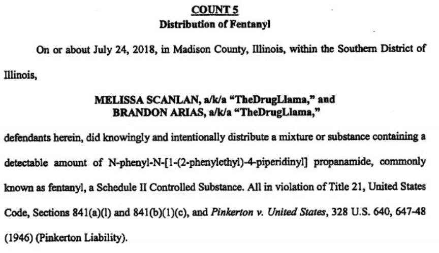
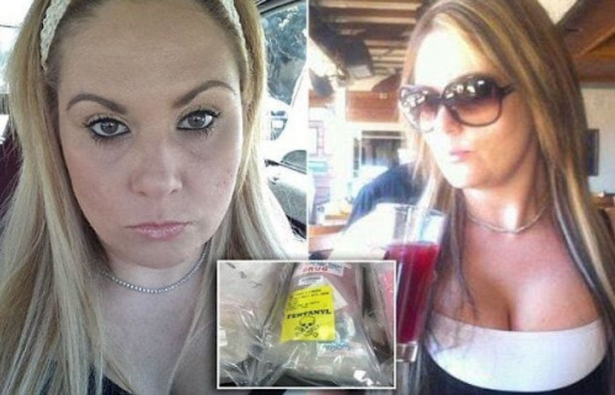
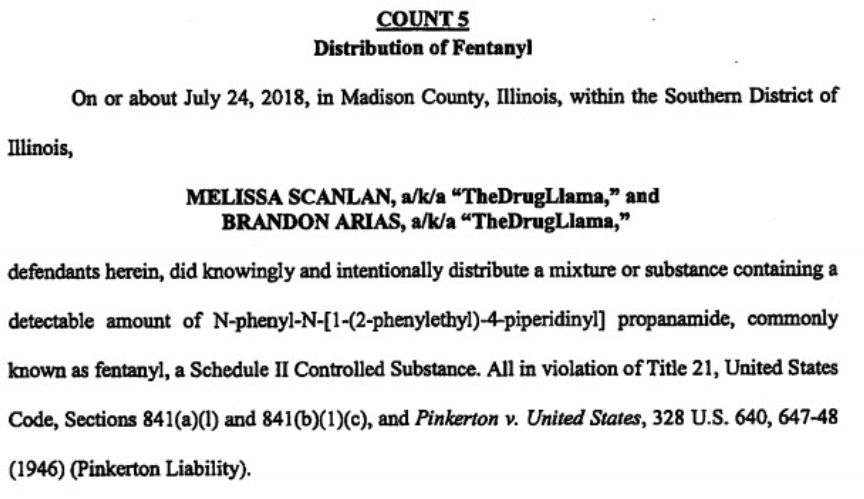
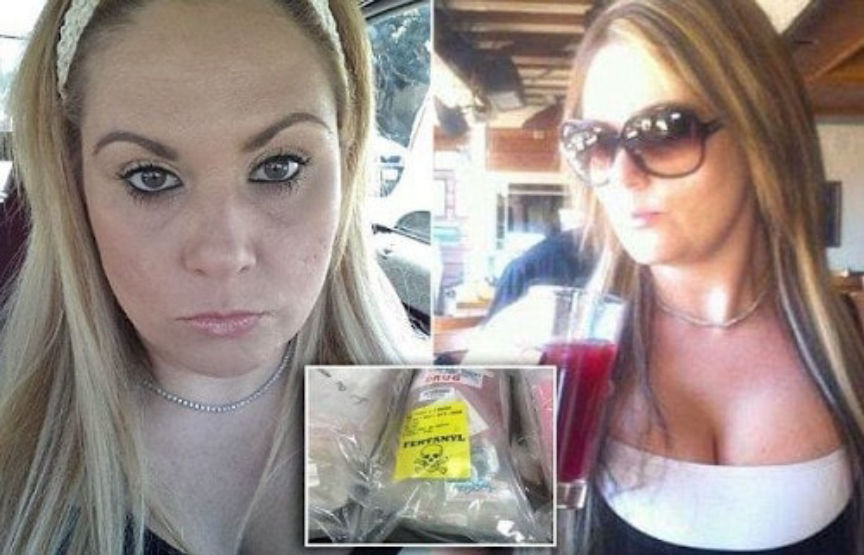

San Diego Man Gets Nine Years for Selling Fentanyl on the Darkweb
~3 min read | Published on 2019-11-12, tagged Darkweb-Vendor, Drug-Bust, Drugs, Sentenced using 557 words.
One of the two defendants behind the Dream Market vendor account “The Drug Llama” was sentenced in a United States District Court to 108 months in federal prison for his role in a large-scale fentanyl distribution operation.
Brandon Arias was sentenced to nine years in prison for a total of eight charges connected to the trafficking of narcotics through a vendor account on Dream Market. Arias, according to court documents as well as his own confession, helped his co-defendant Melissa Scanlan sell fentanyl, acetyl fentanyl, and other illegal substances through the darkweb. Together, Arias and Scanlan opened and operated a vendor account under the username “The Drug Llama.”
The duo primarily distributed counterfeit oxycodone pills through their vendor account. Court documents revealed that Arias and Scanlan had purchased at least 1,000 fentanyl and acetyl fentanyl pills per week from known members of a Mexican drug trafficking cartel. The counterfeits resembled prescription oxycodone 30 mg pills produced by Mallinckrodt Pharmaceuticals. They admitted running this operation for almost two years out of their homes in San Diego, California.
Special Agent in Charge Charles L. Grinstead, FDA Office of Criminal Investigations:
Illicit opioid distribution, whether online or through conventional drug distribution methods, and the resulting overdoses and deaths are a continuing national crisis; those who contribute to that crisis through their illegal actions will be brought to justice. We are fully committed to disrupting and dismantling illegal prescription drug distribution networks that misuse the internet at the expense of public health and safety.
The involvement of the Food and Drug Administration in cases against darkweb vendors usually indicates that a suspect is or was distributing or producing counterfeit versions of a prescription medication. In this case, not only had Arias and Scanlan been distributing potentially lethal oxycodone knockoffs, but they had also been selling misbranded Cytotec (misoprostol). Misoprostol is an NSAID often used illegally for self-induced abortions in locations where medically supervised surgical or medical abortions are either illigal or too expensive. Misoprostol was the only drug aside from fentanyl and acetyl fentanyl listed in Arias’ indictment.
In July 2019, Arias pleaded guilty to five counts of illegally distributing fentanyl; one count of conspiracy to distribute fentanyl; selling counterfeit drugs; and misbranding drugs. Scanlan, at her recent court appearance, pleaded guilty to a similar set of charges: one count of conspiracy to distribute fentanyl; five counts of distributing fentanyl; one count of selling counterfeit drugs; one count of misbranding drugs; one count of conspiracy to commit international money laundering; and one count of distribution of fentanyl resulting in death.
The duo had earned and split a total of $100,000 through their drug trafficking operation. The majority of their earnings came from the distribution of fentanyl and acetyl fentanyl pills (both of which are high-profile substances for the DEA).
Scanlan has a sentencing appearance scheduled for January 2020 where she will likely receive a similar sentence.
“Drug traffickers who operate from the dark corners of the internet are not immune from arrest and prosecution,” stated DEA Special Agent in Charge William Callahan of the St. Louis Division. “The men and women of the DEA and our law enforcement partners are well positioned to investigate, locate, and arrest cyber drug traffickers, and their co-conspirators, who spread their poison in the Greater St. Louis Metropolitan area, no matter where they operate from.”
The DOJ Announcement
The Drug Llama Indictment
Brandon Arias was sentenced to nine years in prison for a total of eight charges connected to the trafficking of narcotics through a vendor account on Dream Market. Arias, according to court documents as well as his own confession, helped his co-defendant Melissa Scanlan sell fentanyl, acetyl fentanyl, and other illegal substances through the darkweb. Together, Arias and Scanlan opened and operated a vendor account under the username “The Drug Llama.”
The duo primarily distributed counterfeit oxycodone pills through their vendor account. Court documents revealed that Arias and Scanlan had purchased at least 1,000 fentanyl and acetyl fentanyl pills per week from known members of a Mexican drug trafficking cartel. The counterfeits resembled prescription oxycodone 30 mg pills produced by Mallinckrodt Pharmaceuticals. They admitted running this operation for almost two years out of their homes in San Diego, California.
Distribution of Fentanyl
Special Agent in Charge Charles L. Grinstead, FDA Office of Criminal Investigations:
Illicit opioid distribution, whether online or through conventional drug distribution methods, and the resulting overdoses and deaths are a continuing national crisis; those who contribute to that crisis through their illegal actions will be brought to justice. We are fully committed to disrupting and dismantling illegal prescription drug distribution networks that misuse the internet at the expense of public health and safety.
The involvement of the Food and Drug Administration in cases against darkweb vendors usually indicates that a suspect is or was distributing or producing counterfeit versions of a prescription medication. In this case, not only had Arias and Scanlan been distributing potentially lethal oxycodone knockoffs, but they had also been selling misbranded Cytotec (misoprostol). Misoprostol is an NSAID often used illegally for self-induced abortions in locations where medically supervised surgical or medical abortions are either illigal or too expensive. Misoprostol was the only drug aside from fentanyl and acetyl fentanyl listed in Arias’ indictment.
Seized Fentanyl Pills
In July 2019, Arias pleaded guilty to five counts of illegally distributing fentanyl; one count of conspiracy to distribute fentanyl; selling counterfeit drugs; and misbranding drugs. Scanlan, at her recent court appearance, pleaded guilty to a similar set of charges: one count of conspiracy to distribute fentanyl; five counts of distributing fentanyl; one count of selling counterfeit drugs; one count of misbranding drugs; one count of conspiracy to commit international money laundering; and one count of distribution of fentanyl resulting in death.
Melissa Scanlan
The duo had earned and split a total of $100,000 through their drug trafficking operation. The majority of their earnings came from the distribution of fentanyl and acetyl fentanyl pills (both of which are high-profile substances for the DEA).
Scanlan has a sentencing appearance scheduled for January 2020 where she will likely receive a similar sentence.
“Drug traffickers who operate from the dark corners of the internet are not immune from arrest and prosecution,” stated DEA Special Agent in Charge William Callahan of the St. Louis Division. “The men and women of the DEA and our law enforcement partners are well positioned to investigate, locate, and arrest cyber drug traffickers, and their co-conspirators, who spread their poison in the Greater St. Louis Metropolitan area, no matter where they operate from.”
The DOJ Announcement
The Drug Llama Indictment